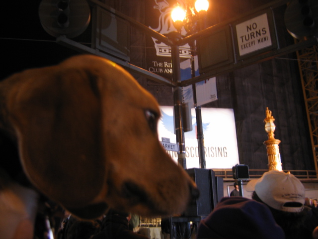

<--Previous Up Next-->

Earthquake centennial celebration
The great earthquake of 1906 took place at 5:12 AM on April 18th. After the earthquake, San Francisco's citizens met at Lotta's Fountain at Market and Kearny Streets to reunite with loved ones and exchange news. Exactly 100 years later, San Franciscans met at the fountain to commemorate the earthquake and fire -- and Huxley was there. Here, he ponders the fountain, the top of which can be seen behind the white hat.